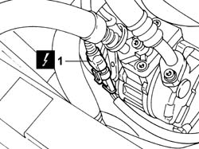
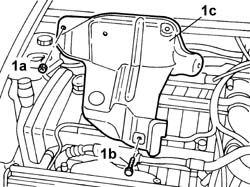
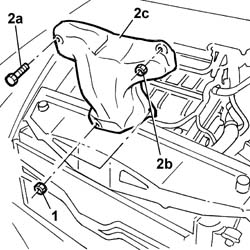

1072C44 Exhaust manifold heat shield on BULKHEAD - R.R.
- Path
- Procedures > 10 ENGINE > 1072 inlet and exhaust manifolds > 1072C exhaust manifolds > 1072C44 Exhaust manifold heat shield on BULKHEAD - R.R.
- Kind
- repair procedure (removal / refitting; the operation number is the code)
- Applies to
- engines: 2.0 TB, 2.4 20V; all production periods
- Interactive page
- https://sloeber94.github.io/elrnDB-lThss/en/#/75097
Applies to: engines: 2.0 TB; all production periods
 Removing
Removing
 Refitting
Refitting- Position the vehicle on a lift.
- Make sure that the ignition key is in the OFF position, then open the boot, remove the cover on the left hand side and disconnect the negative battery lead.
- Raise the vehicle on the lift.
See in Op. 7040D50 ENGINE COMPARTMENT UPPER SOUND INSULATION SHIELD - R.R.
See in Op. 1088E10 Radiator cooling FAN - R.R.
See in Op. 1048A10 COMPLETE AIR FILTER -R.R.
See in Op. 1048A50 air inlet pipe to turbocharger - r + r
See in Op. 1048A21 AIR INLET HOSE FROM INTAKE TO FILTER - R.R.
See in Op. 1016A40 Ignition COIL COVER on cylinder head - R.R.
1. Disconnect the electrical connection for the rear Lambda sensor.
 | Description | Connector |
|---|---|---|
1 | Lambda sensor on catalyzer | K017 |

Applies to: engines: 2.0 TB; all production periods
1. Undo the fixing nuts (1a) and the bolt (1b) and extract the heat shield (1c) upwards.

Applies to: engines: 2.0 TB; all production periods
Refitting
Removing- Position the heat shield bulkhead.
- Tighten the bolt and the nuts fixing the heat shield bulkhead.
- Connect the electrical connection for the front Lambda sensor.
| Description | Connector |
|---|---|---|
. | Lambda sensor on catalyzer | K017 |
See in Op. 1016A40 Ignition COIL COVER on cylinder head - R.R.
See in Op. 1048A21 AIR INLET HOSE FROM INTAKE TO FILTER - R.R.
See in Op. 1048A50 air inlet pipe to turbocharger - r + r
See in Op. 1048A10 COMPLETE AIR FILTER -R.R.
See in Op. 1088E10 Radiator cooling FAN - R.R.
See in Op. 7040D50 ENGINE COMPARTMENT UPPER SOUND INSULATION SHIELD - R.R.
- Connect the negative battery terminal, then close the boot.
- Remove the vehicle from the lift.
Applies to: engines: 2.4 20V; all production periods
Removing
Refitting- Disconnect the negative battery lead.
See in Op. 7040D50 ENGINE COMPARTMENT UPPER SOUND INSULATION SHIELD - R.R.
See in Op. 1048A28 vacuum air circuit resonator pipe - r+r
See in Op. 1048A21 AIR INLET HOSE FROM INTAKE TO FILTER - R.R.
See in Op. 1048A23 Cold AIR INTAKE for air filter - R.R.
See in Op. 1016A40 Ignition COIL COVER on cylinder head - R.R.
1. Undo the lower nuts fixing the heat shield bulkhead.
2. Undo the bolt (2a) and the nut (2b), then extract the heat shield bulkhead (2c) upwards.

Applies to: engines: 2.4 20V; all production periods
Refitting
Removing- Position the heat shield bulkhead.
- Tighten the bolt and the nuts fixing the heat shield bulkhead.
See in Op. 1016A40 Ignition COIL COVER on cylinder head - R.R.
See in Op. 1048A23 Cold AIR INTAKE for air filter - R.R.
See in Op. 1048A21 AIR INLET HOSE FROM INTAKE TO FILTER - R.R.
See in Op. 1048A28 vacuum air circuit resonator pipe - r+r
See in Op. 7040D50 ENGINE COMPARTMENT UPPER SOUND INSULATION SHIELD - R.R.
- Connect the negative battery lead.
Topics linked from this page (8)
- 1016A40 Ignition COIL COVER on cylinder head - R.R.
- 1048A10 COMPLETE AIR FILTER -R.R.
- 1048A21 AIR INLET HOSE FROM INTAKE TO FILTER - R.R.
- 1048A23 Cold AIR INTAKE for air filter - R.R.
- 1048A28 vacuum air circuit resonator pipe - r+r
- 1048A50 air inlet pipe to turbocharger - r + r
- 1088E10 Radiator cooling FAN - R.R.
- 7040D50 ENGINE COMPARTMENT UPPER SOUND INSULATION SHIELD - R.R.
Topics that link to this page (14)
- 1016C10 SINGLE CYLINDER HEAD - R.R. and Replace gasket
- 1020A20 CRANKCASE SUMP - R.R. clean contact surfaces and apply sealant
- 1064A19 HOSE CONNECTED to EXHAUST PIPE - R.R.
- 1072C10 EXHAUST MANIFOLD - R.R. and Replace seal
- 1072C13 EXHAUST MANIFOLD GASKET - REPLACEMENT
- 1076B10 Exhaust PIPE assembly - R.R.
- 1080B40 CATALYTIC PRECONVERTER - R.R.
- 1080B62 CATALYTIC CONVERTER - R.R.
- 1084B40 Engine oil supply pipe to turbocharger
- 1084B42 Engine oil return pipe to turbocharger
- 1084C10 Engine oil heat exchanger - R.R.
- 1088D22 WATER PUMP INLET CONNECTOR - R.R.
- 1088D47 COOLANT SUPPLY AND RETURN HOSES TO ENGINE OIL HEAT EXCHANGER - R.R.
- 4410D10 Front suspension FRAME - R.R.